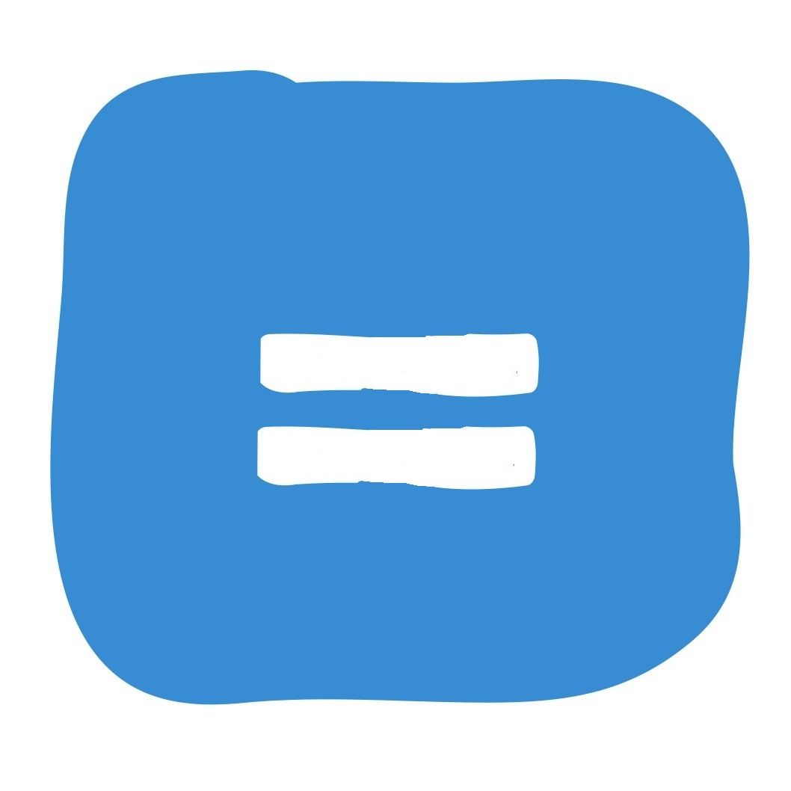

{dust}
asynchronous streaming templates for the browser and node.jsWhy JavaScript Templating?
There are a number of advantages provided by implementing templates in JavaScript with the Dust template rendering solution. They include:
- Dust templates are compiled to JavaScript for speed of execution
- Since JavaScript is cacheable, Dust templates can be sent to a browser once and reused which is not the case with server-side generated JSP pages
- In addition to being cacheable, the Dust templates compiled to JavaScript can be served from a CDN for faster loading
- No need for UI developers to start a Tomcat server to render a page served with JSON-- much faster cycle time, less issues
- Continuing acceleration of JavaScript performance in browsers continues to make client-side work faster
- Write once and can run the same on both the client (browser) and server using JS engine such as V8/rhino
Show me some Dust
A quick sample is often the best way to get a general sense of something. In that vein, here is a simple Dust template and it's JSON data below it
1. Template or write your own:
Ready
The compiled template registers itself by name:
When you're done messing around have a look at the guide.
2. Template behavior (contexts and helpers):
Ready

3. Render or stream the result: